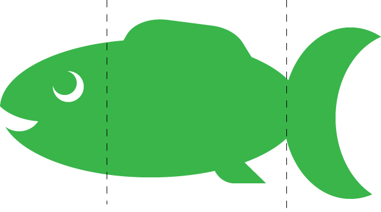

Præsentationsteknik
Mange kan holde taler, og det har vi også set igennem de sidste mange årtier. Der har været rigtig mange gode som for eksempel Martin Luther King jr., Adolf Hitler og Barack Obama.
For at de er bleven så gode har de nok haft fokus på hvordan d bedst skulle komme ud til befolkningen.
Der er mange forskellige elementer man skal havde styr på når man skal holde præsentationen, til at starte på skal man havde lavet præsentationen, ved hjælp af de 9 c’er som man bruger til at tilrette selve formålet med præsentationen.
The 9 c's
- Concise – Gør det kort
- Compelling – Gør det interessant og overbevisende
- Conceptual
- Customized – Tilpas det til kunderne
- Conversational - Gør det åbent for yderligere samtale
- Clear – Gør det klart og forståeligt
- Credible – gør det troværdig og pålideligt
- Concrete – gør det specifikt
- Consistent - Gør den konsekvent
Fisken

Så kommer man til fisken, fisken er delt som i tre stykker, dem kalder jeg for forretten, hovedretten og desserten.
Forretten som er hovedet på fisken, er begyndelsen af præsentationen, det er her man få alles opmærksomhed ved at skabe interesse og nysgerrighed indenfor det emne præsentationen handler om.
Hovedretten som så er kroppen af fisken, er selve indholdet af præsentationen, det er her det spændende kommer, de gode pointer, de forskellige analyser og historier.
Til sidst kommer man til desserten, som selvfølgelige er halen, altså slutningen på præsentationen, her giver man lige en kort hurtig gentagelse af præsentationen.
f.eks. som multimediedesigner skal vi lave projekter til virksomheder, som vi skal præsentere til virksomhederne, og der er fisken god at bruge.
Kilder:Præsentationsteknik PowerPoint